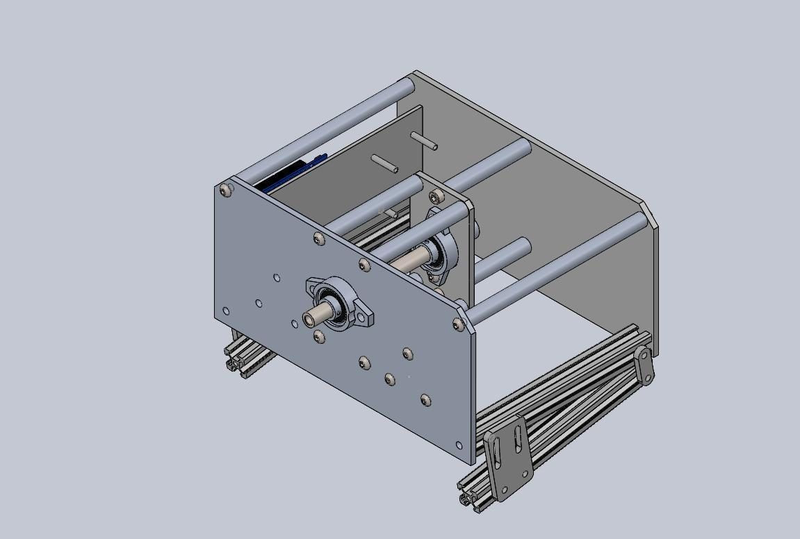

MENG 4778 Microcontrollers & Mechatronics · Fall 2026
Force-feedback driving simulator
I race in a sim league with friends, and a wheel that pushes back like a real car makes it feel like driving. So for our mechatronics project we are building one: at least 2.5 Nm of force feedback from a DC motor, run by an Arduino.
Team 5Status in progressMy part CAM / CNC, assembly, electronics


What it is
The group project for MENG 4778 Microcontrollers and Mechatronics. I race in a sim league with friends, and a wheel without force feedback feels dead: you can't feel the grip go. So our group of five is building one that pushes back.
What we're building
- A DC motor drives the steering shaft through a 5:1 belt, so a small motor gives enough torque.
- A 600-pulse encoder reads the wheel angle; an Arduino and motor driver set the torque.
- The game sends the effects over USB: centering, damping and vibration.
What I'm doing
I did the CAM and CNC machining of the wheel's main frame. Next I'm helping with assembly and the electronics.